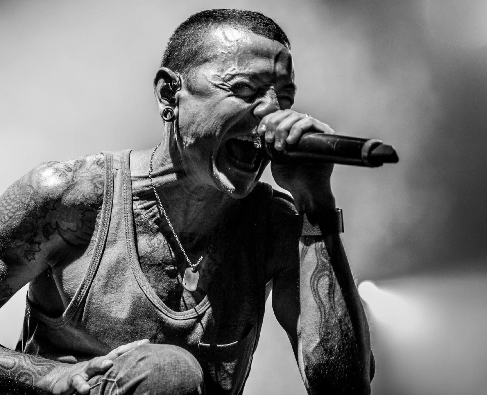

In Memorian of Chester Bennington
"A Voz Marcante que Redefiniu o Rock com Emoção e Intensidade"

"Chester Bennington entregando paixão e energia em uma performance
inesquecível."
Linha do Tempo da Vida de Chester Bennington:
- 1976 - Nasce em 20 de março, em Phoenix, Arizona.
- 1980s - Sofre abusos na infância e luta com traumas emocionais. Começa a se interessar por música, inspirado por bandas como Depeche Mode e Stone Temple Pilots.
- 1993 - Junta-se à banda Grey Daze, ganhando notoriedade na cena local.
- 1996 - Sai do Grey Daze devido a diferenças criativas, enquanto continua a trabalhar em sua música e compor.
- 1999 - Junta-se ao Linkin Park após ser descoberto por Jeff Blue, vice-presidente de A&R na Zomba Music.
- 2000 - Lançamento de Hybrid Theory, álbum de estreia do Linkin Park, que se torna um sucesso global e o torna uma estrela do rock.
- 2003 - Lançamento de Meteora, consolidando o sucesso da banda com faixas icônicas como "Numb" e "Somewhere I Belong".
- 2005 - Forma o projeto paralelo Dead by Sunrise, mostrando um lado mais experimental de sua música.
- 2007 - Lançamento de Minutes to Midnight, marcando uma mudança no som do Linkin Park.
- 2013 - Torna-se vocalista do Stone Temple Pilots, banda que o influenciou na juventude, permanecendo até 2015.
- 2017 - Lançamento de One More Light, álbum que reflete temas pessoais e emocionais mais profundos. Em 20 de julho, Chester falece aos 41 anos, deixando um legado duradouro na música.
- 2020 - Linkin Park lança uma edição especial de Hybrid Theory para comemorar 20 anos do álbum e honrar sua memória.
"I've put my trust in you, pushed as far as I can go. For all this, there's only one thing you should know." ("In the End" - Linkin Park)
Se possível, dedique um momento para conhecer mais sobre essa figura notável em sua página na Wikipédia.